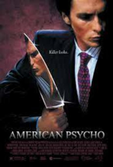
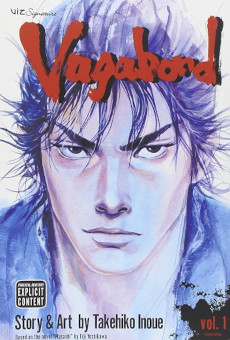

Mais abaixo terá mais informações sobre os itens acima, caso queira ir direto para o item, clique em cima do mesmo.
Abaixo mostra meus albuns favoritos:
Agora alguns dos meus filmes favoritos
Robert Neville é um brilhante cientista e o único sobrevivente de uma epidemia que transformou os humanos em mutantes sedentos por sangue. Andando pela cidade de Nova York, ele procura por outros possíveis sobreviventes e tenta achar a cura da praga usando seu próprio sangue, que é imune.
Em Nova York, em 1987, o belo jovem profissional Patrick Bateman tem uma segunda vida como um horrível assassino em série durante a noite. O elenco é formado pelo detetive, a noiva, a amante, o colega de trabalho e a secretária. Esta é uma comédia de humor seco que examina os elementos que transformam um homem em um monstro.
A história acompanha Guts e seus amigos encarando as consequências da transformação de Griffith no quinto membro da Mão de Deus, Femto.
O mangá retrata à sua própria maneira a vida fictícia de Miyamoto Musashi, um dos maiores samurais do Japão. Sua trama é um misto de jornada intelectual do autoconhecimento, ao mesmo tempo em que treina suas habilidades com a espada em busca do título de "Invencível abaixo do Sol".